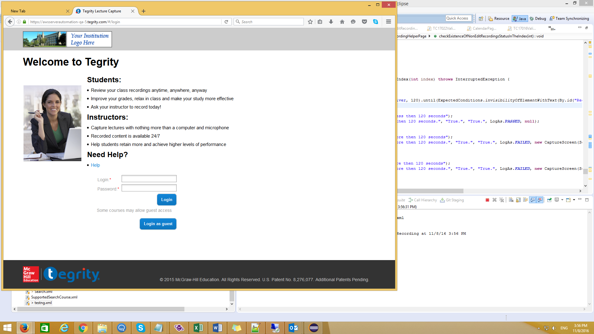
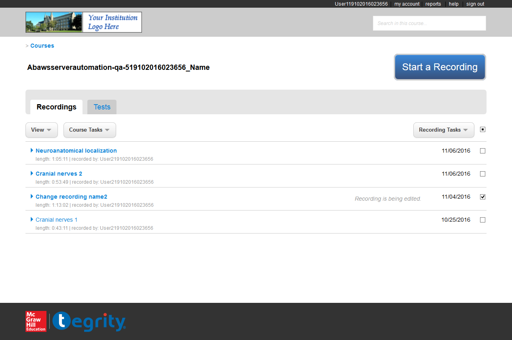
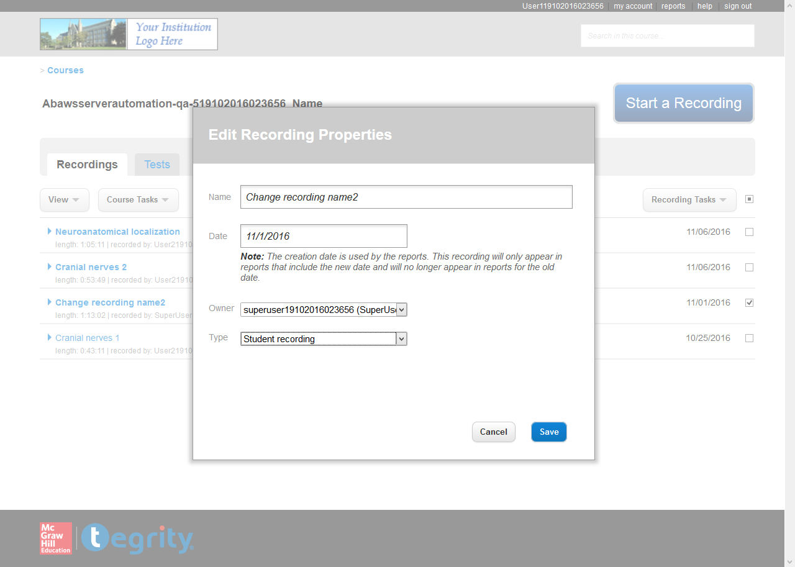
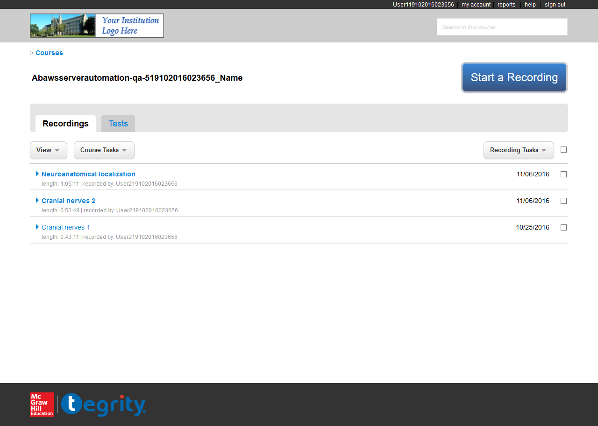

Reflections of Visionary Minds
The following table lists down the Sequential Steps during the Run
TestCase Name: test17022 : Iteration 1
Time Taken for Executing: 315 Sec
Current Run Number: Run 68 Method Type: Test Method
TestCase Name: test17022 : Iteration 1
Time Taken for Executing: 315 Sec
Current Run Number: Run 68 Method Type: Test Method
Requirement Coverage/ TestCase Description
Requirement Coverage/Build Info/Cycle - Description
Execution Platform Details
| O.S | : | Windows 8.1, amd64Bit, v6.3 |
| Java | : | 1.8.0_65 |
| Hostname | : | QA-2-Win8_1-64 |
| Selenium | : | 2.53.1 |
Summary
| Status | : | Failed |
| Execution Date | : | 08-Nov-2016 04:02:03 |
| Browser | : | firefox,v47.0.1 |
Author Info
| Author Name | : | Unknown |
| Creation Date | : | Unknown |
| Version | : | Unknown |
| System User | : | MoshikK |
| S.No | Step Description | Input Value | Expected Value | Actual Value | Time | Line No | Status | Screen shot |
|---|---|---|---|---|---|---|---|---|
| 1 | load page succeeded | https://awsserverautomation-qa-5.tegrity.com | 5 Sec | 414 |  |
 | ||
| 2 | Clicked on Login element | Clicked succeeded. | Clicked succeeded.. | 4 Sec | 83 | |
||
| 3 | Tegrity courses home page is visible | User119102016023656 | Course List page is displayed | Course List page is displayed | 852 Milli Sec | 139 | |
|
| 4 | successflly select the course. | 5 Sec | 275 | |
||||
| 5 | select the course: Abawsserverautomation-qa-519102016023656_Name | 4 Sec | 442 | |
||||
| 6 | Checkbox all is selected | 1 Sec | 1773 | |
||||
| 7 | Checkbox. | Success to select. | Sucess to select. | 1 Sec | 3797 | |
||
| 8 | Select Recording Tasks -> EditRecordingProperties menu items | EditRecordingProperties window is displayed | EditRecordingProperties window is displayed | 2 Sec | 1988 | |
||
| 9 | Recording name changed. | Change to: Change recording name | Changed to [[FirefoxDriver: firefox on WINDOWS (55308356-d429-47d7-85b2-66ba5c573c56)] -> id: recordingTItle]Change recording name | 3 Sec | 485 | |
||
| 10 | Clicked on save button. | Success. | Success. | 253 Milli Sec | 510 | |
||
| 11 | The Edit Recording Properites window was close at time. | Success. | Success. | 4 Sec | 851 | |
||
| 12 | Confirm window. | Closed. | Closed. | 1 Milli Sec | 871 | |
||
| 13 | Confirm menu background color is same as recording background color. | 2 Sec | 691 | |
||||
| 14 | The location of the ok button is on the right bottom. | 63 Milli Sec | 709 | |
||||
| 15 | Clicked on OK button. | 201 Milli Sec | 390 | |
||||
| 16 | Confirm window. | Closed. | Closed. | 3 Sec | 449 | |
||
| 17 | Recording list. | Target recording exist. | Target recording exist. | 390 Milli Sec | 2663 | |
||
| 18 | The status has change in less then 120 seconds. | True. | True. | 5 Sec | 4685 | |
||
| 19 | Checkbox all is selected | 698 Milli Sec | 1773 | |
||||
| 20 | Checkbox. | Success to select. | Sucess to select. | 1 Sec | 3797 | |
||
| 21 | Select Recording Tasks -> EditRecordingProperties menu items | EditRecordingProperties window is displayed | EditRecordingProperties window is displayed | 2 Sec | 1988 | |
||
| 22 | Recording name changed. | Change to: Change recording name2 | Changed to [[FirefoxDriver: firefox on WINDOWS (55308356-d429-47d7-85b2-66ba5c573c56)] -> id: recordingTItle]Change recording name2 | 3 Sec | 485 | |
||
| 23 | Clicked on save button. | Success. | Success. | 242 Milli Sec | 510 | |
||
| 24 | The Edit Recording Properites window was close at time. | Success. | Success. | 3 Sec | 851 | |
||
| 25 | Confirm window. | Closed. | Closed. | 0 Milli Sec | 871 | |
||
| 26 | Confirm menu background color is same as recording background color. | 2 Sec | 691 | |
||||
| 27 | The location of the ok button is on the right bottom. | 59 Milli Sec | 709 | |
||||
| 28 | Clicked on OK button. | 242 Milli Sec | 390 | |
||||
| 29 | Confirm window. | Closed. | Closed. | 3 Sec | 449 | |
||
| 30 | Recording list. | Target recording exist. | Target recording exist. | 397 Milli Sec | 2663 | |
||
| 31 | The status has change in less then 120 seconds. | True. | True. | 5 Sec | 4685 | |
||
| 32 | Checkbox all is selected | 437 Milli Sec | 1773 | |
||||
| 33 | Checkbox. | Success to select. | Sucess to select. | 1 Sec | 3797 | |
||
| 34 | Select Recording Tasks -> EditRecordingProperties menu items | EditRecordingProperties window is displayed | EditRecordingProperties window is displayed | 2 Sec | 1988 | |
||
| 35 | Clicked on element | Clicked succeeded. | Clicked succeeded.. | 396 Milli Sec | 107 | |
||
| 36 | Verify the day from the calendar. | 8 Sec | 189 | |
||||
| 37 | The date is in the following format: 'XX/XX/XXXX' | Success. | Success. | 34 Milli Sec | 914 | |
||
| 38 | Clicked on save button. | Success. | Success. | 153 Milli Sec | 510 | |
||
| 39 | The Edit Recording Properites window was close at time. | Success. | Success. | 3 Sec | 851 | |
||
| 40 | Confirm window. | Closed. | Closed. | 0 Milli Sec | 871 | |
||
| 41 | Confirm menu background color is same as recording background color. | 2 Sec | 691 | |
||||
| 42 | The location of the ok button is on the right bottom. | 48 Milli Sec | 709 | |
||||
| 43 | Clicked on OK button. | 168 Milli Sec | 390 | |
||||
| 44 | Confirm window. | Closed. | Closed. | 3 Sec | 449 | |
||
| 45 | The Record date:11/06/2016 is different from the String: 11/04/2016 | 1 Sec | 4969 |  |
 | |||
| 46 | The status has change in less then 120 seconds. | True. | True. | 7 Sec | 4685 | |
||
| 47 | Checkbox all is selected | 508 Milli Sec | 1773 | |
||||
| 48 | Checkbox. | Success to select. | Sucess to select. | 1 Sec | 3797 | |
||
| 49 | Select Recording Tasks -> EditRecordingProperties menu items | EditRecordingProperties window is displayed | EditRecordingProperties window is displayed | 2 Sec | 1988 | |
||
| 50 | Clicked on element | Clicked succeeded. | Clicked succeeded.. | 307 Milli Sec | 107 | |
||
| 51 | Verify the day from the calendar. | 8 Sec | 189 | |
||||
| 52 | The date is in the following format: 'XX/XX/XXXX' | Success. | Success. | 34 Milli Sec | 914 | |
||
| 53 | Clicked on save button. | Success. | Success. | 170 Milli Sec | 510 | |
||
| 54 | The Edit Recording Properites window was close at time. | Success. | Success. | 4 Sec | 851 | |
||
| 55 | Confirm window. | Closed. | Closed. | 0 Milli Sec | 871 | |
||
| 56 | Confirm menu background color is same as recording background color. | 2 Sec | 691 | |
||||
| 57 | The location of the ok button is on the right bottom. | 51 Milli Sec | 709 | |
||||
| 58 | Clicked on OK button. | 195 Milli Sec | 390 | |
||||
| 59 | Confirm window. | Closed. | Closed. | 3 Sec | 449 | |
||
| 60 | The Record date:11/01/2016 is equals from the String: 11/01/2016 | 1 Sec | 4966 | |
||||
| 61 | The status has change in less then 120 seconds. | True. | True. | 5 Sec | 4685 | |
||
| 62 | Checkbox all is selected | 396 Milli Sec | 1773 | |
||||
| 63 | Checkbox. | Success to select. | Sucess to select. | 1 Sec | 3797 | |
||
| 64 | Select Recording Tasks -> EditRecordingProperties menu items | EditRecordingProperties window is displayed | EditRecordingProperties window is displayed | 3 Sec | 1988 | |
||
| 65 | Clicked on executivead (executiveadName) superuser19102016023656 (SuperUser19102016023656) user119102016023656 (User119102016023656) user219102016023656 (User219102016023656) element | Clicked succeeded. | Clicked succeeded.. | 301 Milli Sec | 107 | |
||
| 66 | All The instracutors are found at the list. | Success. | Success. | 70 Milli Sec | 665 | |
||
| 67 | Clicked on executivead (executiveadName) element | Clicked succeeded. | Clicked succeeded.. | 266 Milli Sec | 83 | |
||
| 68 | The instracutor is found at the list. | Success. | Success | 0 Milli Sec | 949 | |
||
| 69 | Clicked on save button. | Success. | Success. | 135 Milli Sec | 510 | |
||
| 70 | The Edit Recording Properites window was close at time. | Success. | Success. | 5 Sec | 851 | |
||
| 71 | Confirm window. | Closed. | Closed. | 0 Milli Sec | 871 | |
||
| 72 | Confirm menu background color is same as recording background color. | 2 Sec | 691 | |
||||
| 73 | The location of the ok button is on the right bottom. | 56 Milli Sec | 709 | |
||||
| 74 | Clicked on OK button. | 180 Milli Sec | 390 | |
||||
| 75 | Confirm window. | Closed. | Closed. | 3 Sec | 449 | |
||
| 76 | The Record creator:recorded by: executiveadName is equals from the String: recorded by: executiveadName | 1 Sec | 4966 | |
||||
| 77 | The status has change in less then 120 seconds. | True. | True. | 5 Sec | 4685 | |
||
| 78 | Checkbox all is selected | 497 Milli Sec | 1773 | |
||||
| 79 | Checkbox. | Success to select. | Sucess to select. | 1 Sec | 3797 | |
||
| 80 | Select Recording Tasks -> EditRecordingProperties menu items | EditRecordingProperties window is displayed | EditRecordingProperties window is displayed | 2 Sec | 1988 | |
||
| 81 | Clicked on executivead (executiveadName) superuser19102016023656 (SuperUser19102016023656) user119102016023656 (User119102016023656) user219102016023656 (User219102016023656) element | Clicked succeeded. | Clicked succeeded.. | 267 Milli Sec | 107 | |
||
| 82 | All The instracutors are found at the list. | Success. | Success. | 68 Milli Sec | 665 | |
||
| 83 | Clicked on superuser19102016023656 (SuperUser19102016023656) element | Clicked succeeded. | Clicked succeeded.. | 254 Milli Sec | 83 | |
||
| 84 | The instracutor is found at the list. | Success. | Success | 0 Milli Sec | 949 | |
||
| 85 | Clicked on save button. | Success. | Success. | 153 Milli Sec | 510 | |
||
| 86 | The Edit Recording Properites window was close at time. | Success. | Success. | 3 Sec | 851 | |
||
| 87 | Confirm window. | Closed. | Closed. | 0 Milli Sec | 871 | |
||
| 88 | Confirm menu background color is same as recording background color. | 2 Sec | 691 | |
||||
| 89 | The location of the ok button is on the right bottom. | 48 Milli Sec | 709 | |
||||
| 90 | Clicked on OK button. | 184 Milli Sec | 390 | |
||||
| 91 | Confirm window. | Closed. | Closed. | 3 Sec | 449 | |
||
| 92 | The Record creator:recorded by: SuperUser19102016023656 is equals from the String: recorded by: SuperUser19102016023656 | 1 Sec | 4966 | |
||||
| 93 | The status has change in less then 120 seconds. | True. | True. | 6 Sec | 4685 | |
||
| 94 | Checkbox all is selected | 438 Milli Sec | 1773 | |
||||
| 95 | Checkbox. | Success to select. | Sucess to select. | 1 Sec | 3797 | |
||
| 96 | Select Recording Tasks -> EditRecordingProperties menu items | EditRecordingProperties window is displayed | EditRecordingProperties window is displayed | 2 Sec | 1988 | |
||
| 97 | Clicked on Regular recording Proctoring recording Student recording element | Clicked succeeded. | Clicked succeeded.. | 477 Milli Sec | 107 | |
||
| 98 | The drop down is contians all the types. | Success. | Success. | 79 Milli Sec | 789 | |
||
| 99 | Clicked on Student recording element | Clicked succeeded. | Clicked succeeded.. | 313 Milli Sec | 83 | |
||
| 100 | Click on the Type: Student recording | Success. | Success | 1 Milli Sec | 579 | |
||
| 101 | Verify that the type was choosen. | Success. | Success | 101 Milli Sec | 601 | |
||
| 102 | Clicked on executivead (executiveadName) superuser19102016023656 (SuperUser19102016023656) user119102016023656 (User119102016023656) user219102016023656 (User219102016023656) user319102016023656 (User319102016023656) user419102016023656 (User419102016023656) element | Clicked succeeded. | Clicked succeeded.. | 88 Milli Sec | 107 | |
||
| 103 | The instracutor are not found at the list. | Success. | Fail | 146 Milli Sec | 657 | |
 | |
| 104 | Clicked on save button. | Success. | Success. | 260 Milli Sec | 510 | |
||
| 105 | The Edit Recording Properites window was close at time. | Success. | Success. | 15 Sec | 851 | |
||
| 106 | Confirm window. | Closed. | Closed. | 0 Milli Sec | 871 | |
||
| 107 | Confirm menu background color is same as recording background color. | 2 Sec | 691 | |
||||
| 108 | The location of the ok button is on the right bottom. | 43 Milli Sec | 709 | |
||||
| 109 | Clicked on OK button. | 179 Milli Sec | 390 | |
||||
| 110 | Confirm window. | Closed. | Closed. | 3 Sec | 449 | |
||
| 111 | Waiting for element visibility | Element is visibile before timout | Element is not visible after timeout | 32 Sec | 236 |  |
 | |
| 112 | Select StudentRecordingsTab -> StudentRecordingsTab | StudentRecordingsTab was click | StudentRecordingsTab was clicked | 2 Sec | 1008 | |
||
| 113 | The Record creator:recorded by: SuperUser19102016023656 is equals from the String: recorded by: SuperUser19102016023656 | 1 Sec | 4966 | |
||||
| 114 | The status has change in less then 120 seconds. | True. | True. | 6 Sec | 4685 | |
||
| 115 | Checkbox. | Success to select. | Sucess to select. | 1 Sec | 3797 | |
||
| 116 | Select Recording Tasks -> EditRecordingProperties menu items | EditRecordingProperties window is displayed | EditRecordingProperties window is displayed | 2 Sec | 1988 | |
||
| 117 | Clicked on Regular recording Proctoring recording Student recording element | Clicked succeeded. | Clicked succeeded.. | 295 Milli Sec | 107 | |
||
| 118 | The drop down is contians all the types. | Success. | Success. | 57 Milli Sec | 789 | |
||
| 119 | Clicked on Proctoring recording element | Clicked succeeded. | Clicked succeeded.. | 257 Milli Sec | 83 | |
||
| 120 | Click on the Type: Proctoring recording | Success. | Success | 0 Milli Sec | 579 | |
||
| 121 | Clicked on save button. | Success. | Success. | 247 Milli Sec | 510 | |
||
| 122 | The Edit Recording Properites window was close at time. | Success. | Success. | 52 Sec | 851 | |
||
| 123 | Confirm window. | Closed. | Closed. | 0 Milli Sec | 871 | |
||
| 124 | Confirm menu background color is same as recording background color. | 2 Sec | 691 | |
||||
| 125 | The location of the ok button is on the right bottom. | 48 Milli Sec | 709 | |
||||
| 126 | Clicked on OK button. | 176 Milli Sec | 390 | |
||||
| 127 | Confirm window. | Closed. | Closed. | 3 Sec | 449 | |
||
| 128 | Select TestsTab -> TestsTab | TestsTab was click | TestsTab was clicked | 4 Sec | 1683 | |
||
| 129 | Recording list. | Target recording exist. | Target recording exist. | 5 Sec | 2663 | |
||
| 130 | Message window. | Done. | Done. | 0 Milli Sec | 451 | |
{kind=link}
{kind=link}
{kind=link}
{kind=link}
Reason for Failure: [ATU Custom Reporter Step Failed Exception]
Click Me to Show/Hide the Full Stack Trace
[ATU Custom Reporter Step Failed Exception]
at atu.testng.reports.listeners.ATUReportsListener.onTestSuccess(Unknown Source)
at org.testng.internal.Invoker.runTestListeners(Invoker.java:1695)
at org.testng.internal.Invoker.runTestListeners(Invoker.java:1675)
at org.testng.internal.Invoker.invokeMethod(Invoker.java:700)
at org.testng.internal.Invoker.invokeTestMethod(Invoker.java:820)
at org.testng.internal.Invoker.invokeTestMethods(Invoker.java:1128)
at org.testng.internal.TestMethodWorker.invokeTestMethods(TestMethodWorker.java:129)
at org.testng.internal.TestMethodWorker.run(TestMethodWorker.java:112)
at org.testng.TestRunner.privateRun(TestRunner.java:782)
at org.testng.TestRunner.run(TestRunner.java:632)
at org.testng.SuiteRunner.runTest(SuiteRunner.java:366)
at org.testng.SuiteRunner.runSequentially(SuiteRunner.java:361)
at org.testng.SuiteRunner.privateRun(SuiteRunner.java:319)
at org.testng.SuiteRunner.run(SuiteRunner.java:268)
at org.testng.SuiteRunnerWorker.runSuite(SuiteRunnerWorker.java:52)
at org.testng.SuiteRunnerWorker.run(SuiteRunnerWorker.java:86)
at org.testng.TestNG.runSuitesSequentially(TestNG.java:1244)
at org.testng.TestNG.runSuitesLocally(TestNG.java:1169)
at org.testng.TestNG.run(TestNG.java:1064)
at org.testng.remote.RemoteTestNG.run(RemoteTestNG.java:113)
at org.testng.remote.RemoteTestNG.initAndRun(RemoteTestNG.java:206)
at org.testng.remote.RemoteTestNG.main(RemoteTestNG.java:177)